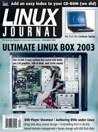

Shutdown Archive web server
Search:
Linux Journal
Issue #116/December 2003

Features
Floppies for the New Millennium
by Rick Moen
A practical guide to setting up and working with USB key chains.
DVD Players
by Dave Phillips
Dave compares and tests the best DVD-playing software.
DVD Authoring
by Ian Pointer
Got ideas for TV-based information design, games and Easter eggs? Make them work on DVDs you create with this versatile software.
Managing Audio with Pd
by Peter Todd
Make your band sound like a symphony orchestra from Uranus with this drag-and-drop sound processing tool.
Ultimate Linux Box
by Glenn Stone
We load up the hottest new 64-bit architecture with the hottest new 3-D and storage hardware.
Indepth
Embedding Perl in MySQL
by Brian Aker
Hey! There's a mistake in this article—Perl code in the middle of an SQL SELECT! Don't you people even read this stuff?
Cross-Platform CD Index
by Shawn P. Garbett
We liked this easy JavaScript-based CD-ROM search system so much, we used it on the 1994-2002
Linux Journal
archive CD.
DVD Transcoding via Linux Metacomputing
by F. J. Gonzalez-Castaño, R. Asorey-Cacheda, R. P. Martinez-Alvarez, F. Comesaña-Seijo and J. Vales-Alonso
Strategies for converting MPEG-2 video from DVDs to MPEG-4 for next-generation home media applications.
Embedded
Driving Me Nuts I2C Drivers, Part 1
by Greg Kroah-Hartman
Toolbox
Kernel Korner
Allocating Memory in the Kernel
by Robert Love
At the Forge
Integrating E-mail
by Reuven M. Lerner
Cooking with Linux
Put Another Nickel in...
by Marcel Gagné
Columns
Linux for Suits
Free Business
by Doc Searls
EOF
Give TCPA an Owner Override
by Seth David Schoen
Reviews
Lindows 4.0
by Steve R. Hastings
Lindows MobilePC/ServeLinux eNote
by Steve R. Hastings
Inside the Security Mind: Making the Tough Decisions
by Paul Barry
Departments
Letters
upFRONT
From the Editor
On the Web
Best of Technical Support
New Products
Strictly On-Line
Resources for DVD Players
by Dave Phillips
Archive Index
Shutdown Archive web server
Search:
Copyright © 1994 - 2018
Linux Journal
. All rights reserved.